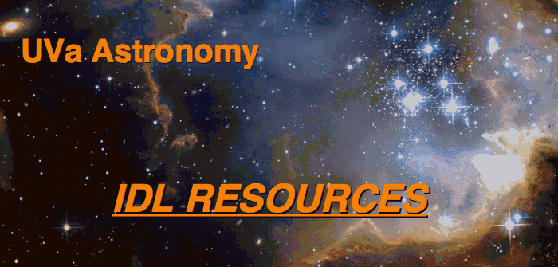

Introductory Documents
Main UVa IDL Site
Demos
- For a demonstration of IDL,
type idldemo at the UNIX command line
- The fastest way to learn to use IDL efficiently is to study
examples of user-written IDL programs. You can display on your screen
the code for any program (except for the proprietary built-in
routines) by typing .run -t [program
name]. If you want a copy of the program written to your
current directory, use the getpro
routine.
Tutorials/Texts
ATV Image Display Tool
- ATV is an IDL GUI image display program
that behaves like DS9 and SAOimage
(example
here). It was written by Aaron Barth. It's an easy way
of inspecting 2-D data and doing quick analysis like plotting
image slices or getting FWHM's and brightnesses of sources. Oriented
toward CCD data.
- At UVa, ATV software is kept in /astro/idl/atv and is included by
default in your IDL path.
- ATV Links
Best Links for Advice, Software Downloads
Help With IDL Programming and Routines
- Exelis supplies documentation, interactively linked to your
active session, with each IDL purchase. The latest documentation can
be found on the
IDL
Documentation Page.
- To access IDL documentation from the UNIX command line, type idlman or idlhelp.
- To access documentation for IDL_5.1 in HTML with a browser,
click here.
- To access hyper-help from within IDL, type ? or ?[topic].
- Most non-proprietary routines, e.g. those in the Astronomy User's
Library, contain an internal documentation section written in a
standard format. This can be accessed by several different routines
within IDL, such as man. You can
obtain the relevant programs from
this
site. Many non-proprietary routines are coded such that if you
simply type the name of the routine without arguments, it will print
the parameter sequence expected (no special access software
needed).
- Guide
to IDL Programming Syntax (Ray Sterner)
Other Links
Last content update
August 2013 by R. W. O'Connell
{kind=link}